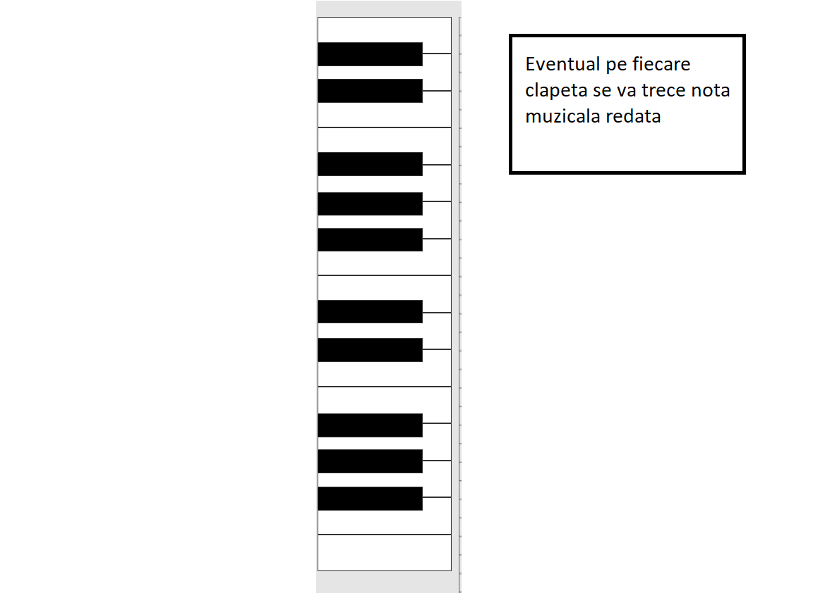
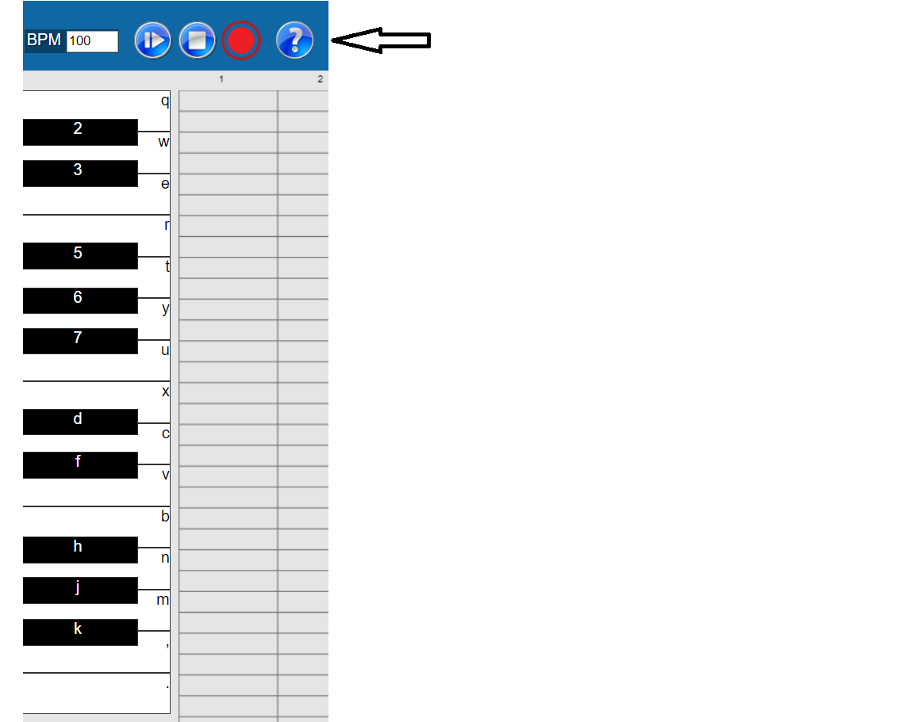
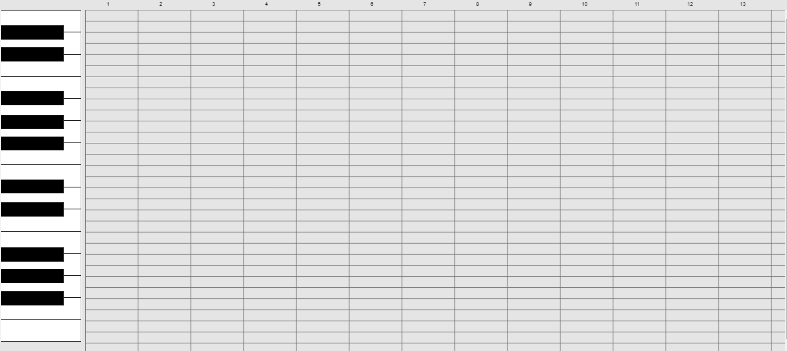
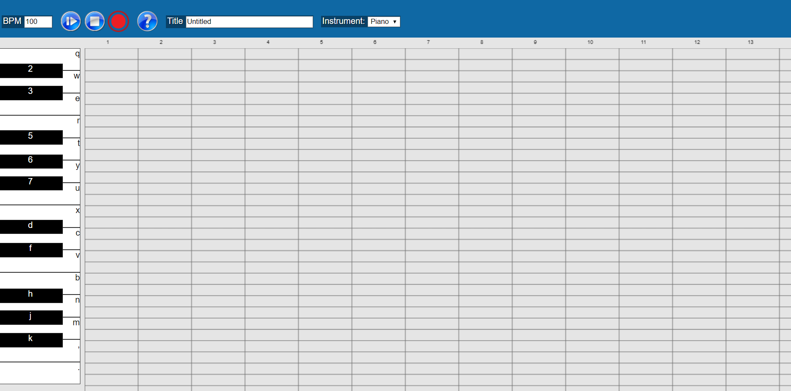
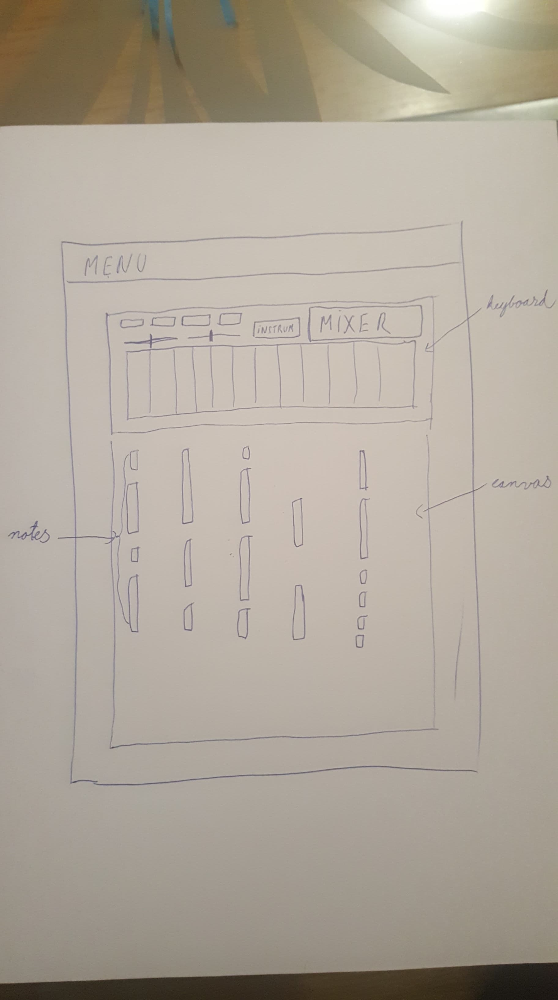

MIORC (midi orchestra)
- Authors
- Dumea Alexandru, Atodiresei Ioana
Cuprins
Abstract
Scurta prezentare a proiectului numarul 17 MIORC (midi orchestra).Idei generale , prototipuri si schite.
Introducere
Să se implementeze o aplicaţie Web care permite formarea unei orchestre on-line. "Cântăreţii" vor putea să-şi aleagă un instrument preferat dintr-o colecţie de minim N instrumente MIDI disponibile (e.g. N=3). Sistemul oferit va putea permite crearea unor "concerte" în care formaţiile vor fi compuse din interpreţi selectaţi de utilizator ori aleşi aleatoriu. Fiecărui instrument i se vor putea ajusta atribute precum sursa melodiei MIDI, volumul, numărul de secvenţe muzicale redate etc. Inspiraţie: OnlineSequencer, Guitar Recorder , Online Virtual MIDI Keyboard.
Design
In principal s-a urmarit un design inspirat din OnlineSequencer
Clapetele
In partea stanga se afla clapetele.
Apasand butonul help din meniu, pe clapete apar mapate si butoanele cu care se pot reda sunetele si de la tatatura, astfel tasta `q` corespunde primei clapete , tasta 2 , clapetei urmatoare , etc.
Privire de ansamblu
 Prototip
Abandonat deoarece trecand peste un numar de note , canvas-ul devenea greu de urmarit, iar meniul era unul minimal.
Interactiunea cu utilizatorul:
Keyboard:
Sunetele pot fi redate fie dand click cu mouse-ul pe clapete , fie cu butoanele mapate de la tastatura.
Canvas:
Aici se pot selecta diferite note muzicale , dand click cu mouse-ul direct pe elementul de redare grafica. Dublu click , iar nota v-a fi stearsa.
Management Cod
Codul este dispoibil pe github.